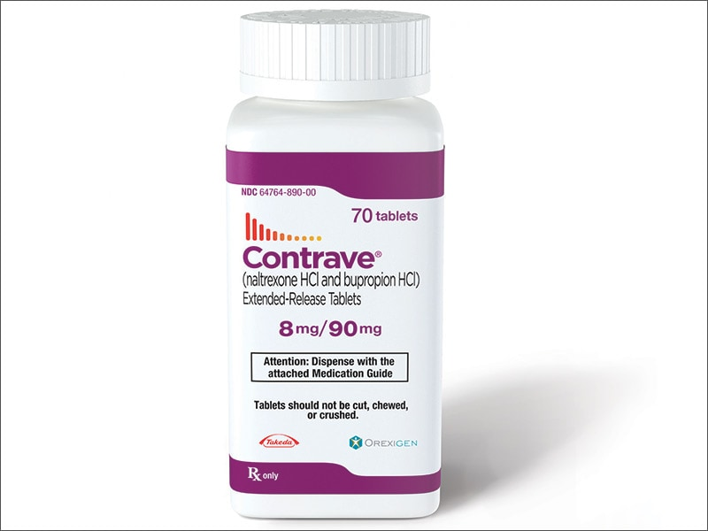
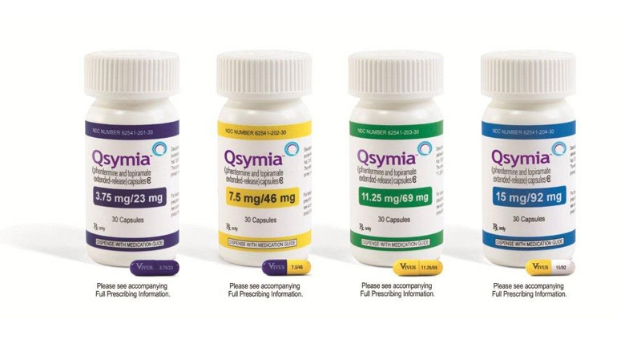
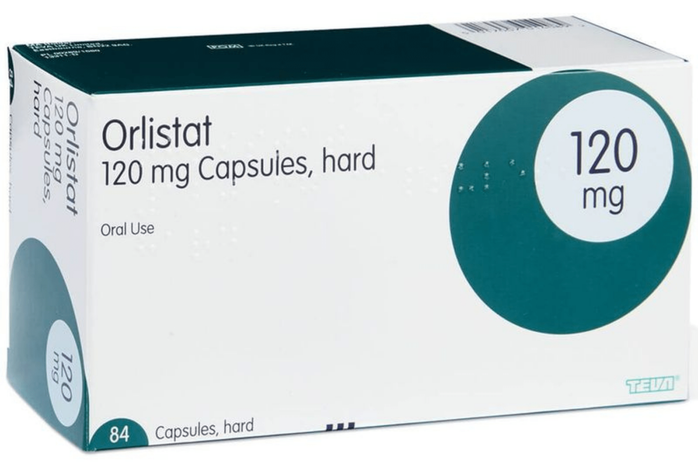
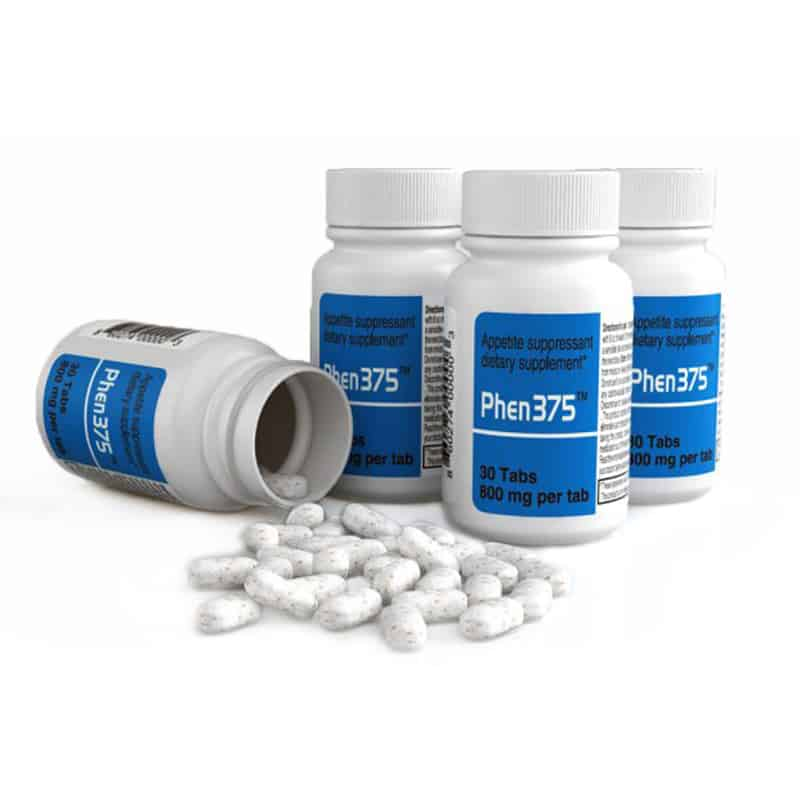
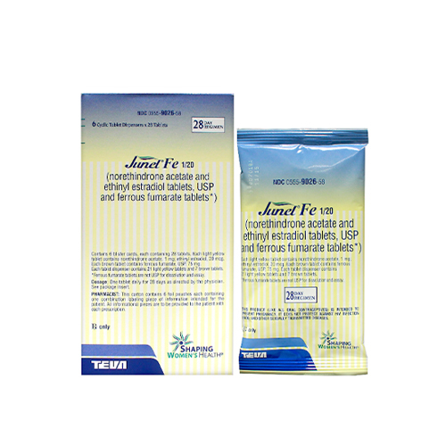
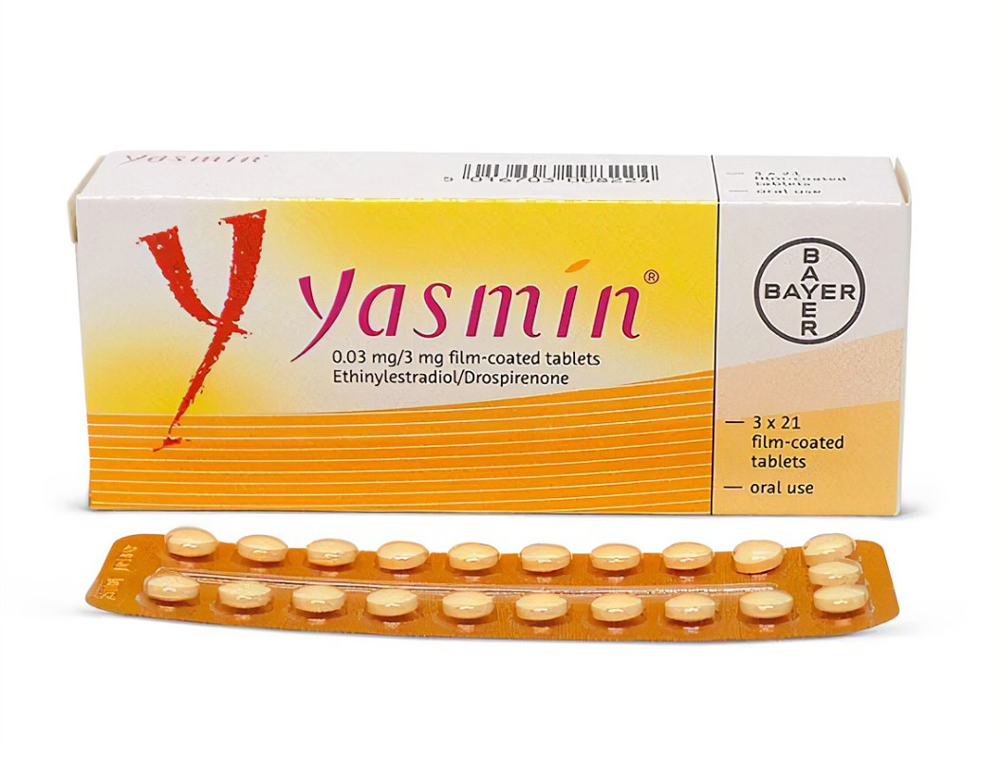

Introduction
If you're more worried about being at a healthy weight, these supplements are for you.
The Pills:
Below are the pills that are recommended/works best for people with a BMI of 25.0-29.9
1. Contrave

The "My Contrave" pill is an oral tablet that combines two medications into one pill: naltrexone and bupropion. You gradually increase your dose during the first month of taking it, but once your body gets used to it, most people take 2 tablets every morning and 2 tablets every evening.
The active ingredients in Contrave work together to reduce your appetite and cravings for food. In initial studies, more than 40% of adults who took Contrave for 1 year lost at least 5% of their initial body weight. More than 20% lost at least 10% of their body weight. Your HCP may be more inclined to prescribe Contrave if you experience emotional eating.
At this time, Contrave is only prescribed as a brand-name medication. A generic version isn’t available yet. And, it’s only approved for adults, so children can’t take it.
2. Qsymia

Qsymia (phentermine / topiramate ER) is another brand-name combination pill. Available as an oral capsule, it’s a once-daily option for weight loss in people 12 years and older.
But since it contains phentermine, Qsymia is considered a controlled substance. It’s not the best option if you or a loved one have a history of substance misuse or dependency.
Qsymia works by reducing your appetite. In initial studies, Qsymia helped about 70% of adults lose at least 5% of their body weight after 1 year. Close to 50% of participants lost at least 10% of their body weight.
When compared to Contrave, researchers found that Qsymia is usually the more effective option.
3. Orlistat

Orlistat (Xenical) is another brand-name prescription weight-loss pill. It’s an oral capsule that adults can take 3 times per day with meals. However, it’s less common than other weight-loss pills, it’s not approved for kids or adolescents, and it can cause some bothersome side effects.
Still, orlistat works by helping your body absorb less fat from the meals you eat. It can also reduce the risk of regaining weight after losing weight. In initial studies, orlistat helped up to 55% of adults lose 5% or more of their body weight after 1 year. Up to 25% lost at least 10% of their body weight.
A lower-dose version of orlistat, Alli, is available over the counter. It can support weight loss in adults alongside a low-fat, low-calorie diet, but the effects are less than the prescription dose.
4. Phentermine

Phentermine (Adipex-P) is a prescription weight-loss medication that comes as a tablet and capsule. It’s available in both generic and brand name versions for people ages 17 and older. But, it’s also a controlled substance and comes with health risks.
Unlike the medications above, phentermine is only FDA approved for use for up to 12 weeks at a time. That’s because when it was approved in 1959, there were no long-term studies to show that it was safe. And there were concerns that it could increase risk for heart disease. Some newer studies suggest that it can be safely used for longer than 12 weeks without increasing risk for heart disease. So your prescriber may recommend taking it for longer, depending on your personal risk and benefit.
Phentermine is one of the most commonly prescribed medications for weight loss, probably because of its low cost. Data suggests that it can help people shed about 3% to 5% of their initial body weight.
Outro
If you're more worried about getting pregnant, these 2 Oral Contreceptive pills are recommended for people with a BMI of 25.0-29.9
1. Junel Fe 1/20

Junel Fe 1/20 is a combination birth control pill containing female hormones that prevent ovulation (the release of an egg from an ovary). This medication also causes changes in your cervical mucus and uterine lining, making it harder for sperm to reach the uterus and harder for a fertilized egg to attach to the uterus.
Junel Fe 1/20 is used as contraception to prevent pregnancy. Junel Fe 1/20 is also used to treat moderate acne in women who are at least 15 years old and have started having menstrual periods, and who wish to use birth control pills. There are many available brands of ethinyl estradiol and norethindrone. Not all brands are listed on this leaflet.
2. Yasmin

Do not Yasmin use if you are pregnant or if you recently had a baby.
You should not take Yasmin if you have: an adrenal gland disorder, kidney disease, uncontrolled high blood pressure, heart disease, coronary artery disease, circulation problems (especially with diabetes), undiagnosed vaginal bleeding, liver disease or liver cancer, severe migraine headaches, if you also take certain hepatitis C medication, if you will have major surgery, if you smoke and are over 35, or if you have ever had a heart attack, a stroke, a blood clot, jaundice caused by pregnancy or birth control pills, or cancer of the breast, uterus/cervix, or vagina.
Taking Yasmin can increase your risk of blood clots, stroke, or heart attack.
Smoking can greatly increase your risk of blood clots, stroke, or heart attack. You should not take Yasmin if you smoke and are over 35 years old.
Yasmin is a combination birth control pill containing female hormones that prevent ovulation (the release of an egg from an ovary).
Yasmin also causes changes in your cervical mucus and uterine lining, making it harder for sperm to reach the uterus and harder for a fertilized egg to attach to the uterus.
Yasmin is used as contraception to prevent pregnancy. Take Yasmin exactly as prescribed by your doctor. Follow all directions on your prescription label. Do not take Yasmin in larger or smaller amounts or for longer than recommended. Take your first pill on the first day of your period or on the first Sunday after your period begins. You may need to use back-up birth control, such as condoms with spermicide, when you first start using this medication. Take one pill every day, no more than 24 hours apart. When the pills run out, start a new pack the following day. You could get pregnant if you do not take one pill daily.